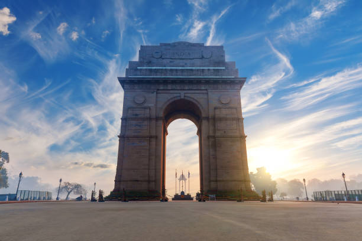

Culture & Heritage
Delhi, the vibrant capital of India, is a fusion of ancient traditions and modern innovation. It is home to some of India’s most iconic monuments like the Red Fort, Qutub Minar, and India Gate. The city’s cultural richness is expressed through its festivals, bustling markets, mouthwatering street food, and timeless architecture. From the spirituality of Akshardham Temple to the colonial charm of Connaught Place, Delhi captures the soul of India.

Red Fort
A UNESCO World Heritage Site, symbolizing the power and grandeur of the Mughal Empire.

India Gate
War memorial honoring Indian soldiers, beautifully lit up at night and a favorite public hangout.

Qutub Minar
The tallest brick minaret in the world, showcasing Indo-Islamic architecture.